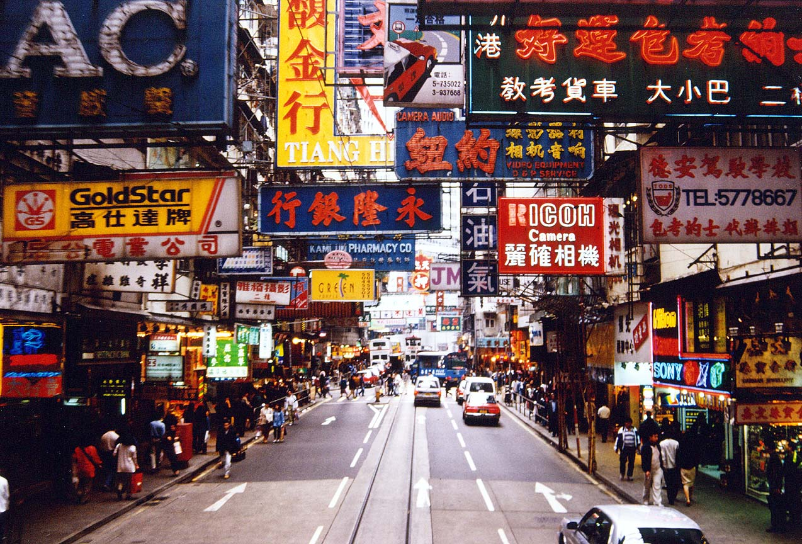

A to Z Search
Barcelona
Budapest
Cuba
Greece
Helsinki
Hong Kong
London
Maldives
Maui
Paris
Prague
Sydney
Taiwan
Vancouver
Venice
|
Hong Kong
Country: China
Rank:15
Tag:Food; Shopping; lifestyle

This enigmatic city of skyscrapers, ancient traditions and heavenly food will
fascinate, whether it's your first visit or your 50th.
People who have been to Maldives:
-
By Piera Chen, Writer:
I love Hong Kong because it has a complexity that eludes definition, sometimes
even by its own people. I can be soul-searching near the Chinese border,
lunching with Sikhs at a Sikh temple, splurging on a set of kitchen knives,
arguing with bohos about the merits of a dress – all within five hours –
followed by a night of Cantonese opera, tango or karaoke, anywhere I choose.
Hong Kong is so intense and so full of possibilities that I’m glad there’s the
Rule of Law (and an awesome transport system) to stop it from whirling into
chaos. For me, that's pretty darn perfect.
reviewID:r15
Highlights:
-
Culture
Beyond the glass and steel of Hong Kong’s commercial persona, the city also
boasts a vibrant cultural scene that features the eclectic influences of its
Chinese roots, colonial connections and a wondrous pool of homegrown talent.
Here, you’re just as likely to find yourself applauding at Asia’s top film
festival as joining in dawn taichi or reading the couplets of a local poet to
the drumbeat of a dragon boat. Culture could also mean indie music under the
stars, a classy art walk, your first Cantonese opera – not to mention the
exhibitions and events staged year-round at the many museums and concert halls.
-
Shopping
From ready-to-wear Chinese jackets to bespoke kitchen knives, the sheer range
and variety of products on Hong Kong’s shelves is mind-bending. Every whim, need
and pocket is catered for in true enterprising spirit by an equally dazzling
number of venues – swanky malls where the moneyed shop, chic side-street
boutiques, antique stores, gadget bazaars, and a colourful mix of markets where
you can haggle to your heart’s content. The city has no sales tax so prices are
generally attractive to visitors.
Things To Do:
- Victoria Peak
telephone:+852 25220922address:Hong Kong ChinagettingThereBus: Bus 15 from Central, below Exchange Sq Train: Peak Tram Lower
TerminusmoreInfo:www.thepeak.com.hkopenHours:24hr
- Man Mo Temple
telephone:+852 25400350address:124-126 Hollywood Rd Sheung WangettingThereBus 26openHours:8am-6pm
People who like this place also like to go to:
Barcelona
Paris
source:
Lonely Planet:
www.lonelyplanet.com/hongkong
|